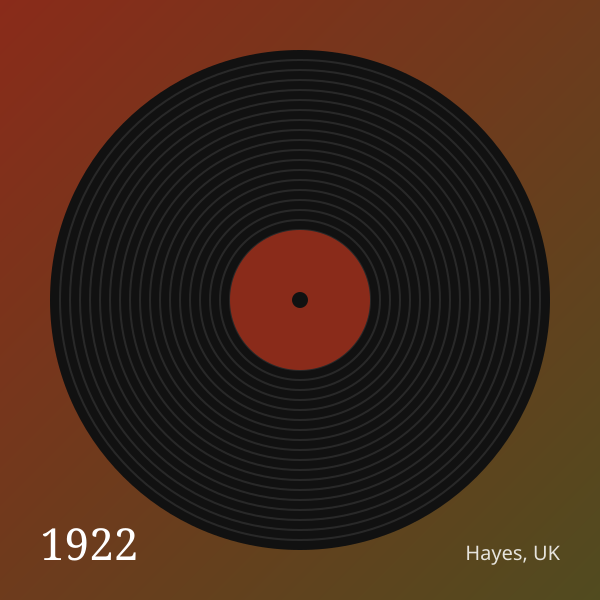

A son keeps his father's grudge

In Wagner's Götterdämmerung, Hagen sits up all night guarding the hall while everyone else sleeps, turning over a revenge that was his father's before it was his. In 1922 the English bass Robert Radford recorded the scene in English for HMV, as "Hagen meditates revenge".
Grudges are often inherited. This is one of the earliest discs on which you can hear an inherited grievance being sung as a duty, slowly and in the dark.